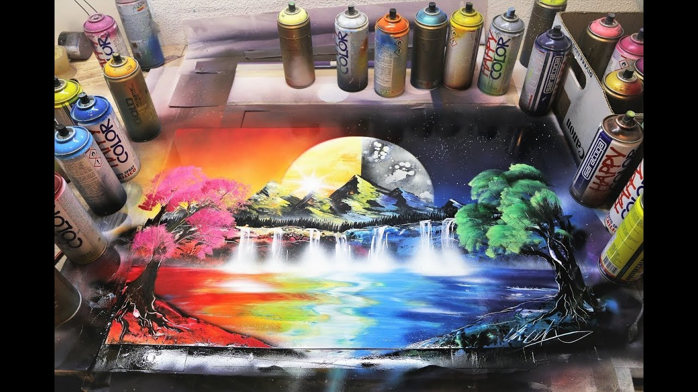

Much of the first version of my CIS 155 project is the demonstration of my web development skills . This I show with constructing several elements in HTML then from there I modify or add styling to those elements with CSS. In this version I exhibited knowledge of various selectors, the means of linking pages, various style concepts such as inheritance and progressive enhancement. With focus on good coding habbits.
In version two of my project I implemented quite a few different things as well as made several enhancements to the existing code. Some of the changes I made involved floating different elements on my page to different positions and dealing with the subsequent container collapse. Other parts I demonstrated consisted of things like using a background image, gradients and the use of image maps.In version three I decided to add in another page and subsequent style sheet. Within that page I build a table of a few of Krylon's spray paint colors. Aside from the table element some styling was done to the page for aestetic purposes, as well as, to match up with the other pages and assist in creating a sense of uniformity.
Version four of my project consisted of adding several elements to the Resources page. I also used CSS to create a shifting color animation for the background of the Resources page. The elements I added to this page were a sound clip of a spraypaint can spraying with the controls visible. I also added a inset window of the Home page, this was more of an experiment than a feature of the page I would like to link in a retailer's web site in this spot but must receive permission before hand. The Final part I added was an artist registration form.
